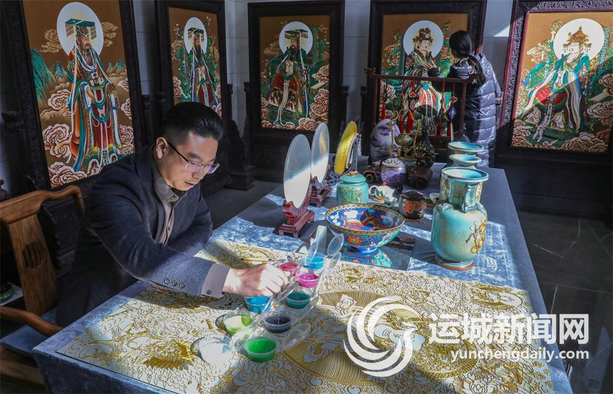
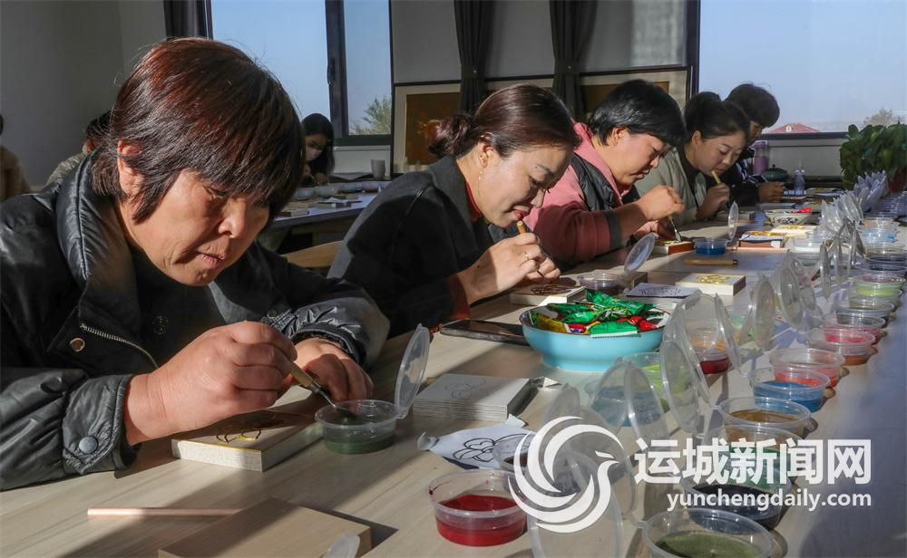

中国掐丝珐琅传承网
中国掐丝珐琅传承网
00
-
00
-
00
中国掐丝珐琅传承网
来源：运城新闻网-运城日报
记者: 裴旭薇 见习记者 王月文
2018年，掐丝珐琅釉画被列为运城市非物质文化遗产代表性项目。今年，山西艺佳仁文化艺术有限公司董事长、掐丝珐琅釉画非遗传承人梁文平被列入第六批省级非物质文化遗产代表性项目代表性传承人名单。今年7月，该公司被评为山西省省级非物质文化遗产代表性项目（掐丝珐琅釉画）保护单位，并在8月入选省级文化产业示范基地。
如今，这项古老的技艺正在被更多的人“看见”，在各级政府部门和传承人的努力下，“指尖技艺”更多地被转化为“指尖效益”，成为激活乡村发展动力、促进就业和增收的特色文化产业。近日，记者走进位于盐湖区东郭镇界村的山西艺佳仁文化艺术有限公司，感受非遗的独特魅力和这项古老技艺在新时代所展现的新风采。
据悉，掐丝珐琅源于中国传统技艺景泰蓝，由于该技艺在明代景泰年间达到巅峰，使用的珐琅釉多以蓝色为主，又名“景泰蓝”，是我国工艺美术界的一颗璀璨明珠，至今已有600多年的历史。
掐丝珐琅釉画是将掐丝珐琅技法移植到画板上的特种绘画艺术形式，主要材质为仿金丝和珐琅釉料，可以附着于各种载体，产生立体效果。经特有工艺处理后，作品具有不褪色、不变形、耐腐蚀、易保存、上百年不陈旧等特点，集实用性和艺术性于一体，具有很高的观赏价值、收藏价值和人文价值。
在梁文平的工作室，一件件制作精良、色彩绚丽的掐丝珐琅釉画作品让人目不暇接，这些不同主题、不同载体的作品看起来雍容华贵、美观大方、震撼心灵。如果近距离仔细观赏，则会发现其每个细节都非常精致，掐丝流畅而又灵动，一笔一画、一弯一绕间，尽显细腻和饱满，精湛的工艺让人叹为观止。
作为年轻一代的掐丝珐琅釉画技艺传承人，梁文平借鉴前辈经验，在传统工艺的基础上不断改良创新，将原来的108道工序改进为20多道工序，不用制坯、无须烧制，画面釉色艳丽、釉沙清晰可见。
梁文平告诉记者，选图、绘图、掐丝、点蓝、干燥、打磨、抛光……一系列纯手工的工序完成后，一幅精美的掐丝珐琅画才算完成。一幅普通的画作一般要用两三个月时间，而一些巨幅作品更是需要耗时3年之久，这对创作者的创造力和耐力是很大的考验。
近年来，梁文平不但推出具有河东文化特色的系列作品，还积极探索将掐丝珐琅工艺应用拓展到更多的领域，包括建筑装饰、商务礼品、文创产品、生活实用品等。目前，其产品市场辐射北京、福建、广东等省市，远销新加坡、马来西亚等东南亚国家，年销售额超过500万元。
2018年，梁文平创作的掐丝珐琅釉画《国色天香》作为国礼赠送巴林王国驻华大使馆并被收藏；2020年8月，央视十套《探索·发现》栏目组对他还原永乐宫的作品《朝元图》进行专题报道；2020年12月，其作品《永乐宫壁画》被山西省晋商博物院收藏；2021年8月，他创作的摆件《气贯千秋》获得外观设计专利。梁文平创立的山西艺佳仁文化艺术有限公司也先后荣获第五届山西星火项目“中国创翼”创业创新大赛三等奖、第九届“创青春”山西青年创新创业大赛二等奖和“创客中国”运城市中小企业创新创业大赛二等奖等。
“做这个挺有意思，特别是看到自己的作品，会很有成就感，关键还能利用空闲时间增加收入，真是一举多得。”今年39岁的界村村民苏洋告诉记者，她在去年参加梁文平工作室组织的掐丝珐琅釉画技能培训后，就被这项技艺所吸引，“我家离这里不远，没事就过来学习，拿一些简单的活儿回家做，一个月大概做500件，增收1000多元。”
在界村，掐丝珐琅釉画工作室为村里带来了艺术气息，让更多的农村妇女接触并喜欢上这项传统技艺，并成为她们增收的一个新的渠道。而这一特色文化产业也成为界村推动乡村振兴及文旅融合的一大亮点。
“艺术给人们带来美的享受，可以陶冶情操，活跃村民的精神文化生活，为老百姓带来就业增收的机会，活跃乡村经济，掐丝珐琅釉画这一项目和我们东郭镇打造和美乡村、建设运城后花园的思路是一致的，也和全镇其他文旅项目互相补充。”界村相关负责人杨建亮告诉记者，自从这一非遗项目落户界村以来，不时就有研学团队前来参观学习，村里的人气更旺了，界村的知名度也更高了。
多年来，梁文平工作室紧跟时代发展步伐和客户需求，不断开发创新，新产品涉及了生活和文化各个领域，在家具、茶具、车挂件、饰品、动漫角色上都可以看到掐丝珐琅釉画的影子。梁文平在全国范围内，参加了近百场非遗展和相关的非遗体验活动，大大提高了品牌知名度。同时，市外事办借助外交部和驻外使领馆宣传山西文化、企业和产品的契机，使掐丝珐琅釉画作为我市特色产品走出国门，成为宣传运城的一张文化名片。
随着宣传和产品创新力度的加大，越来越多的订单和商务合作接踵而至。掐丝珐琅釉画在大众市场需求量的增加也为村民增收带来了更多机会。“掐丝珐琅釉画的市场前景好，应用领域也非常广泛，可以镶嵌在手机壳、瓷器、玻璃、红木、布艺等多个载体上，而且属于劳动力密集型文化产业。”梁文平表示，除了市场订单，工作室近年来还先后吸引了全省及周边城市的1.5万余名小学生前来研学，由此带来的掐丝珐琅釉画的半成品的需求量也不断增加。
“下一步，我们要将研学从小学生扩大到高等院校大学生和成年人旅游团体，让他们通过现场DIY来感受非遗魅力。同时，针对大众市场需求，为村民量身打造一些简单、好上手的半成品，探索零部件式的加工方式，实现产品量产的同时，带动村民增收。”梁文平说。
今年20岁的段雅雯毕业于运城职业技术大学艺术设计专业，半年前，经自己的老师介绍，她开始接触掐丝珐琅釉画，并在梁文平工作室进行实践和学习。见到段雅雯时，她正和广州美术学院插画专业毕业生吉婉婷一起，进行九龙盘的掐丝制作。
在直径40厘米的圆盘上掐出中国龙细小而又丰富的花纹，熟练的工艺师尚且需要3天至4天才能完成掐丝，对段雅雯这样的初学者，则需要一周时间，随后还要用半个多月时间进行上釉、晾晒和后期修复等。尽管从事这一工作并不轻松，但段雅雯却靠着自己的热爱而乐此不疲。未来，她希望自己能学有所成，形成自己的创作风格，在这一艺术领域有所作为。
“将学生自己的特长、专业和掐丝珐琅釉画创作结合起来，形成独有的艺术风格，而没有统一的标准恰恰是艺术的魅力所在。”梁文平坦言，自己对学生的艺术创作不设限，给他们成长的充足空间，鼓励他们将自身鲜明特色和优势发挥到极致。
梁文平认为，保护和传承掐丝珐琅釉画这一技艺，必须做到3点：一是让年轻人喜欢，二是让非遗产品走进大众生活，三是不断创新，让非遗拥有更强的生命力。
近年来，梁文平工作室通过与一线城市的专业团队合作，补齐家族传承在艺术创作上的短板。同时，通过开展校企合作，与开设美术专业的高校联合培养更多的高技能人才，鼓励他们加入创作队伍，并通过为学生提供技术支持，将订单下放到学校，把学生设计和创意转化为商品，增强学生创作动力。
目前，梁文平工作室已经与我市两所高校进行了合作，分别是运城幼儿师范高等专科学校和运城职业技术大学，针对各院校的专业优势开设掐丝珐琅釉画专业，利用两年时间进行理论和实践的系统学习。目前这两所院校的掐丝珐琅釉画专业已吸引近100名学生加入，培养方式也从单纯的兴趣班转为定向培养，同时，工作室还为学生提供管理、技能、设计不同岗位的就业机会。
近年来，梁文平尝试创作更多具有本土文化特色的掐丝珐琅釉画作品，涵盖关公文化、盐池文化、永乐宫壁画等元素，让运城文化借助掐丝珐琅釉画作品走出去。“运城是中华文明的发祥地，文化底蕴深厚，可挖掘的文化元素非常多，是艺术创作的沃土。”梁文平边说边向记者展示一幅名为《“盐”里只有你》的摆件作品：画面中央的盐池如同一只眼球，下方的七彩盐池色彩斑斓，远处的中条山连绵不绝，给人一种静谧的艺术美。
“让掐丝珐琅釉画这一非遗不再是束之高阁的技艺绝活，而是成为可以融入大众生活的艺术享受。”对未来，梁文平有着清晰的思考和规划，通过创新经营理念，打造本土文化品牌，更好地把运城特色文化宣传出去，让掐丝珐琅釉画这一传统技艺在新时代焕发生机和活力，让非遗更好地展现中国文化的魅力和时代风采。